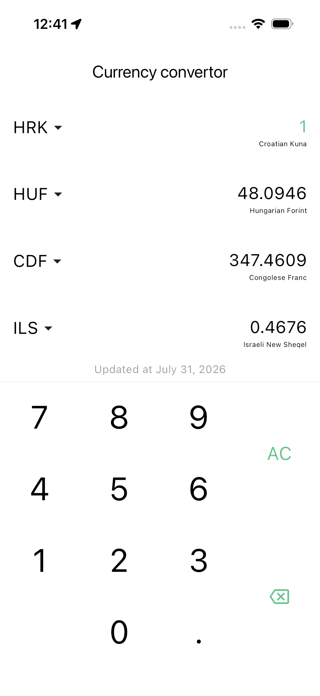
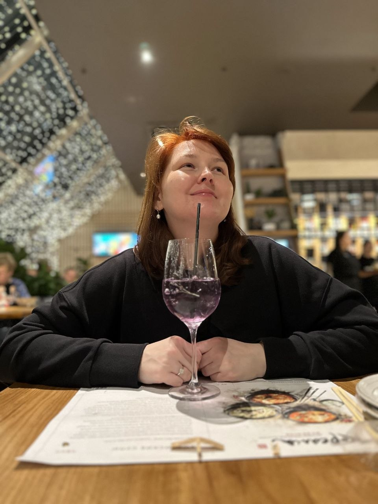
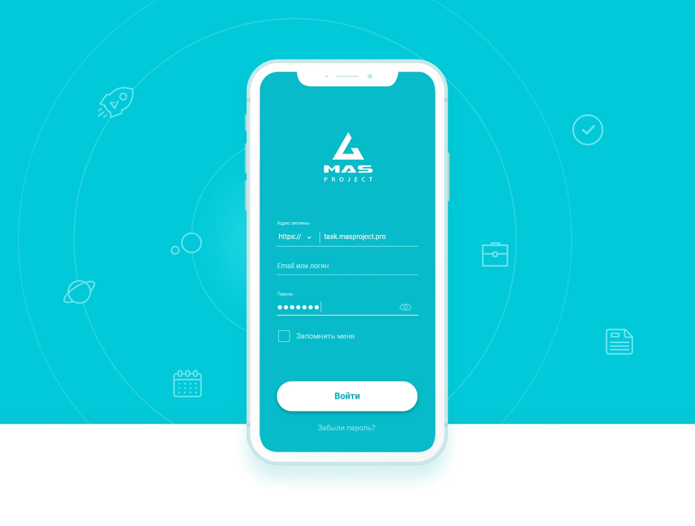
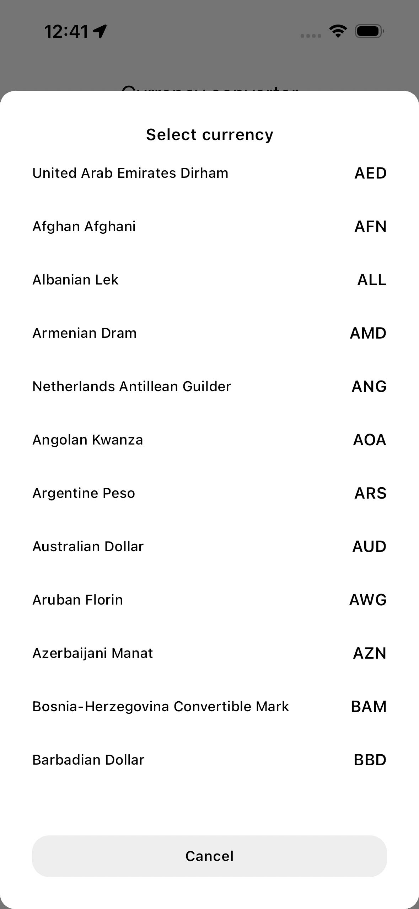
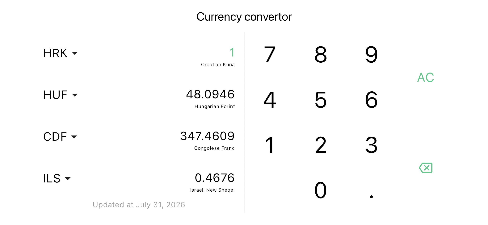
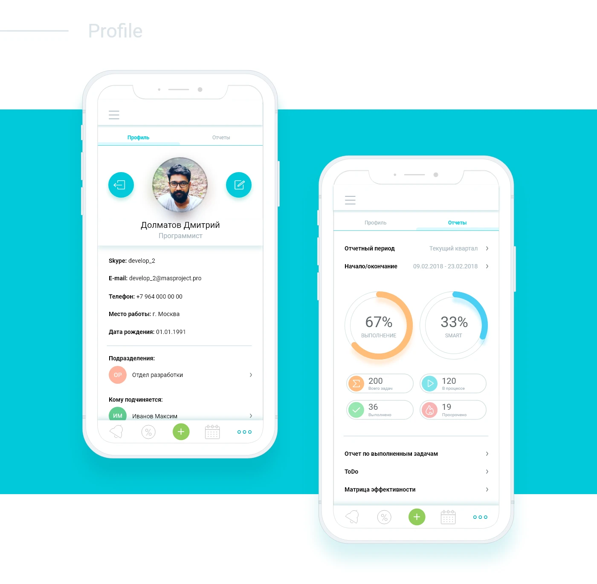

PERSONAL PROJECT · 2022
InCurrency
A focused currency converter built around one simple idea: make the right number visible, even when the connection isn’t.

100+currencies
Available for new opportunities
I’m Daria, a Product Designer who turns complex business processes into clear, useful experiences — from first hypothesis to shipped product.

SPB / 202601 / Selected work
PERSONAL PROJECT · 2022
A focused currency converter built around one simple idea: make the right number visible, even when the connection isn’t.

CORPORATE PRODUCT · 2018—2019
A mobile extension of a corporate performance and motivation system — adapted from desktop without losing the depth of the product.

02 / Case study
A compact utility for travelers, shoppers and anyone who needs to translate value between currencies without friction.
The concept started as a personal hypothesis: would a fast, calm and genuinely usable converter be useful in everyday life? The product needed to work for a quick glance in a new city, a price check in an online shop and a calculation on a plane — including when the network disappears.
As the only designer, I owned the product’s visual language, information structure, interaction logic and app icon. The goal was to keep the tool lightweight without making it feel limited.
01 — The essential loop
Choose a currency, enter a number, scan the result. Four rows keep comparison close at hand.

Up to four currencies can stay visible together, so users don’t have to repeat the same action for every value.
The last successful sync is kept with its date and time. The app remains useful when a connection is unavailable.
A dedicated numeric keypad and clear actions make the main task easy to complete with one hand.

03 / States & details
A useful utility is not only its happy path. I designed for selection, editing, offline mode, last sync, empty values and the small moments that help a user understand what is happening.
03 / Case study
A cross-platform mobile experience for a corporate system used to manage goals, tasks, performance and employee motivation.

MAS Project was originally a desktop system for employee performance, bonuses and non-financial motivation. The mobile app had to preserve the product’s core logic while making everyday actions — checking tasks, opening a report or viewing a profile — accessible on the move.
I worked on the mobile version from information architecture and user flows to interface design, forms, navigation and visual consistency with the wider product.
Tasks, calendar, KPI matrix, reports, knowledge base and profile are brought together in one mobile navigation model.
Progress indicators and report summaries help users understand status before they open the detail.
The mobile interface adapts the established product language instead of creating a disconnected second product.
Result
A released mobile direction for a corporate system, designed to extend the product beyond the desktop workplace.
04 / About me
I’m a Product Designer with a background in graphic design and 11+ years of experience. I’m at my best when the problem is complex, the constraints are real and the team wants to make something clearer than it was yesterday.
Download CV ↓B2B products
Mobile apps
Complex workflows
Data-heavy interfaces
Figma · Miro · Jira
User flows · Prototyping
Design systems · Research
Saint Petersburg
Open to remote & hybrid